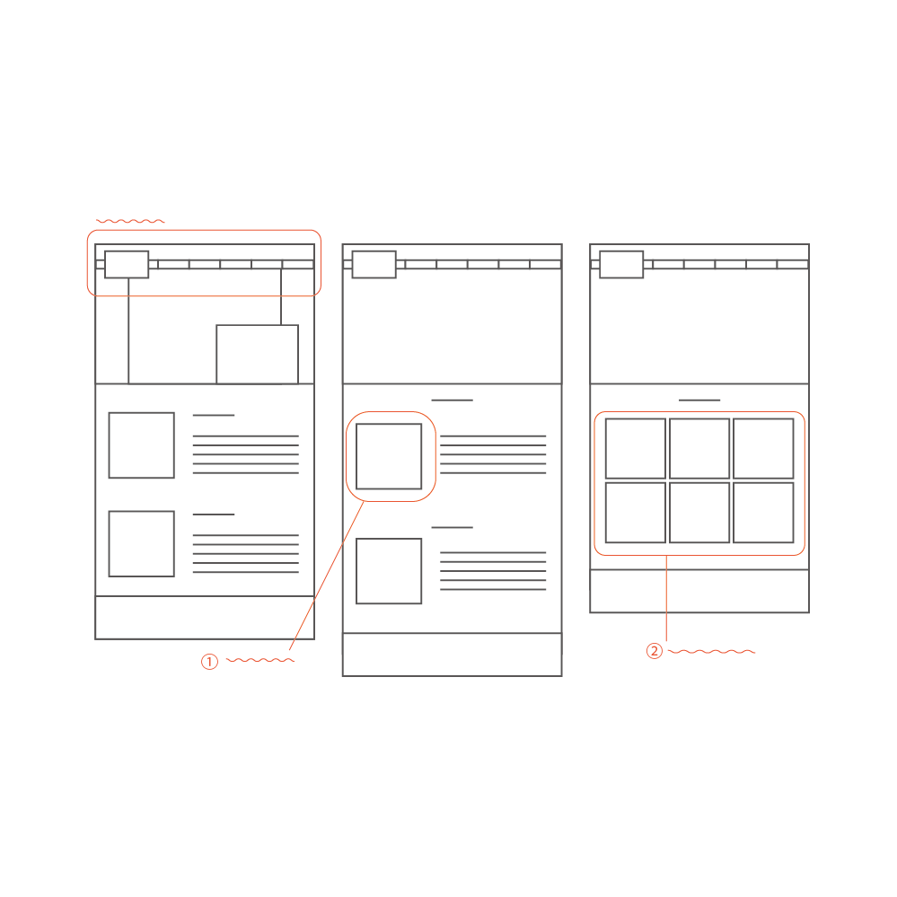
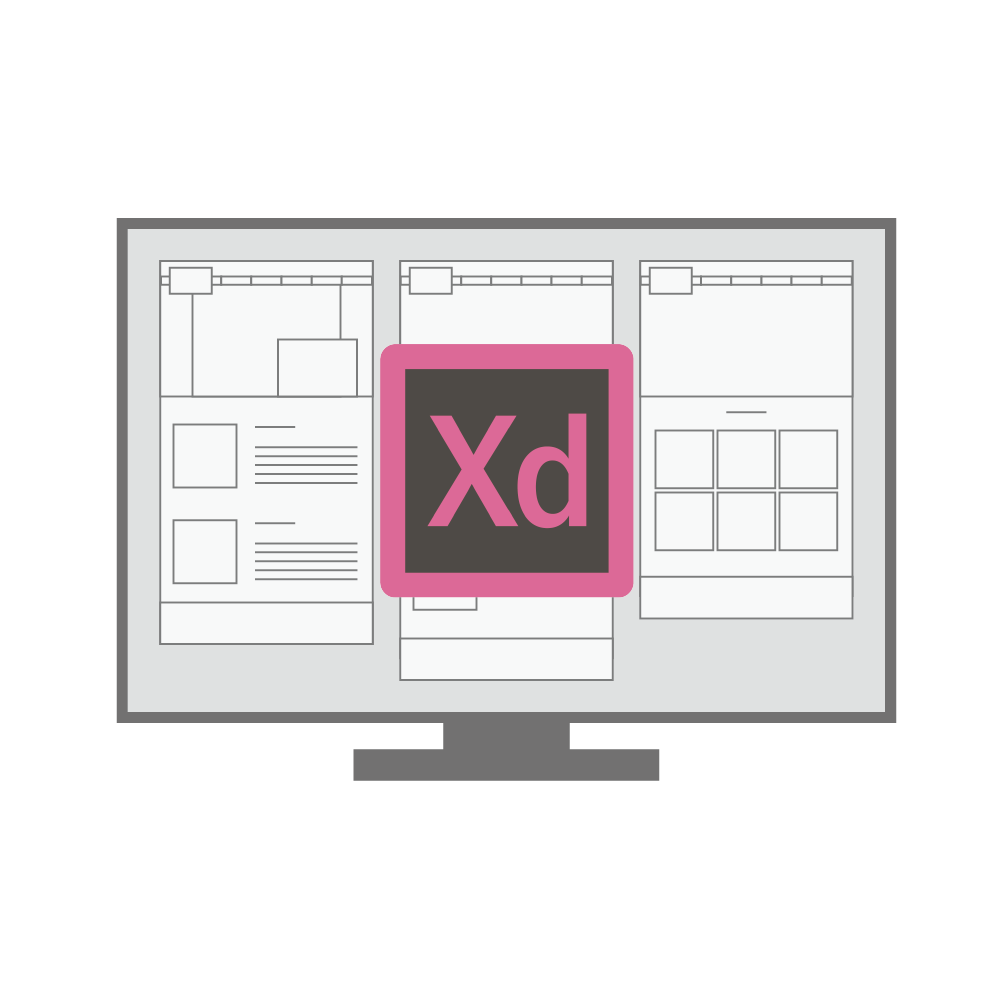
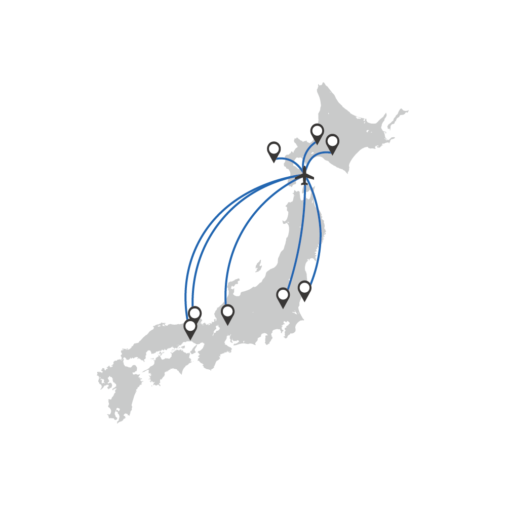
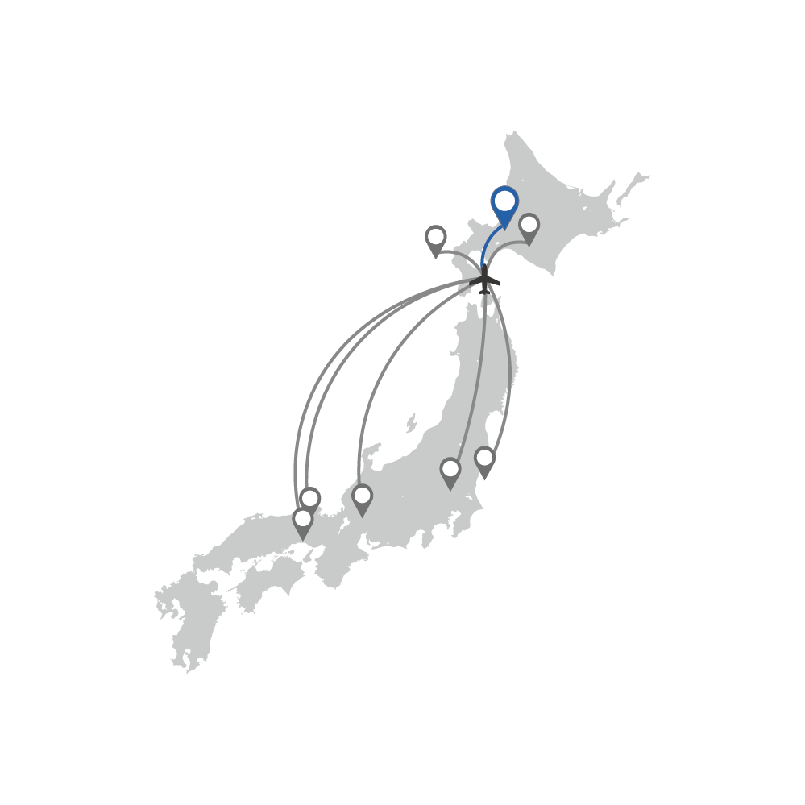
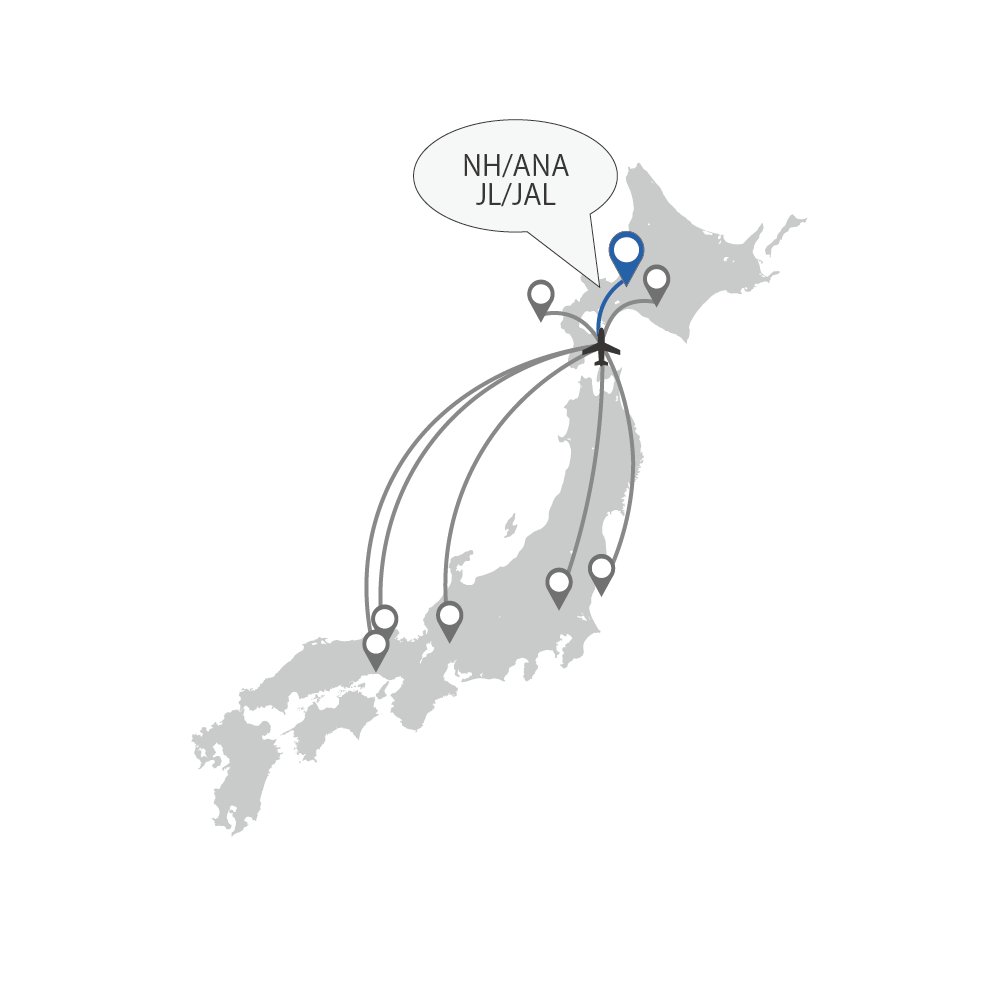

Home
Profile
Works
Contact
課題作品
ウェブサイト改善
HIの視点から問題点を発見、改善、テスト
ユーザビリティの向上を目的に既存ウェブサイトを構造化しユーザーの認知的問題を発見し、リデザインをしました。
何度も初訪問のユーザーの立場に立って、わかりやすいウェブサイトにするように気を付けました。Adobe XDでモックアップを作成し、実際に評価実験を行い、ユーザビリティの向上を実現することができました。
対象サイト
https://airport.ne.jp
作業フロー
1.課題発見
webサイトを構造化し、ユーザーの目的とする情報にたどり着くまでに起こりうる問題点を見つけ出しました。
2.解決策立案

それぞれの問題点に対しての解決策を立案し、それぞれワイヤーフレームでストーリーボードを作成しました。
3.モックアップ作成

Adobe XD CCにて改善WEBサイトを作成しました。
4.評価実験
タスク達成時間を評価実験しました。約半分の時間でタスクを達成することができました。
1
課題発見
webサイトを構造化し、ユーザーの目的とする情報にたどり着くまでに起こりうる問題点を
５つのユーザビリティ要素（学習しやすさ・効率性・記憶しやすさ・エラー発生率・主観的満足度）に基づいて見つけ出しました。
WEBサイト構造化
PDF
課題発見
課題場所
PDF
課題内容
PDF
Pick Up
グローバルナビゲーションの項目名が抽象的で目的のものがどのカテゴリなのか分かりにくい
効率性・記憶しやすさ・エラー発生率が欠如している
2
解決策立案
設定したタスクを達成するまでに発生する問題点に対しての解決策を立案し
それぞれワイヤーフレームでストーリーボードを作成しました。
PDF
Pick Up
タスク：函館空港から就航している都市とそれぞれの場所に行くことのできる空港会社を知る
問題点
それぞれの会社の就航場所を知るには ユーザーが一つ一つページを開いて調べなければならない
改善策
ホバーするだけで就航場所が強調される
3
モックアップ作成
作成したワイヤーフレームを基にモックアップを作成しました。
作成、評価実験、改善を繰り返すため、レイアウトなどをすぐに変えることのできるXDで作成しました。
XD画面
4
評価実験
既存のウェブサイトと問題点を改善したウェブサイトのモックアップを使用して、設定したタスクの達成時間の評価実験を行いました。
タスク達成時間を約半分にすることができました。
評価指標
タスク達成時間
３つのタスク

函館空港から一本の飛行機で行ける都市を言う

その中から行先を決める

利用する航空会社を調べ、伝える
被験者
公立はこだて未来大学情報デザインコース
男3名女3名の計6名
タスク達成時間
47％減少
評価実験レポート（PDF）